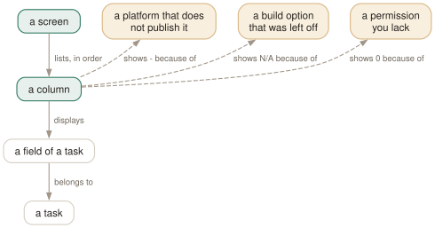

Day 10
The column catalogue
Seventy columns in eight families, the threads that fill your list, and why a column says '-'.
By the end of today you can
- find the column that answers a question, without reading a seventy-entry table
- tell a thread from a process on sight, and decide which you want in the list
- distinguish the four different ways a column can fail to have a value
Seventy columns is a catalogue, not a lesson
The manual page spends 312 of its 768 lines listing columns — nearly half the document. Reading it end to end teaches you almost nothing, because the useful skill is not knowing all seventy but knowing which family to look in when you have a question.
And the catalogue in the page is out of date. The current, authoritative list comes from the binary:
$ htop --sort-key help
PID Process/thread ID
Command Command line (insert as last column only)
STATE Process state (S sleeping, R running, D disk, Z zombie, ...)
ELAPSED Time since the process was started
SCHEDULERPOLICY Current scheduling policy of the process
SECATTR Security attribute of the process (e.g. SELinux or AppArmor)
The last three of those appear nowhere in the manual page's COLUMNS section, along with CWD, CONTAINER, ISCONTAINER, GPU_TIME and GPU_PERCENT. The page also documents a column called M_M_PSSWP, which does not exist — the real name is M_PSSWP.

Command. The three dashed aspects are the ways a column comes back empty, and they are worth telling apart: - means the data does not exist here, N/A means the feature was not built in, and a bare 0 means htop was refused permission and said so badly.The eight families
- Identity
PID,PPID,PGRP,SESSION,TGID,TTY,TPGID,USER,ST_UID. Who and what — and the parentage that Day 5's tree draws.- What it is running
Command,COMM,EXE,CWD. Day 2's three sources, each available as its own column.- State and scheduling
STATE,PRIORITY,NICE,PROCESSOR,SCHEDULERPOLICY,AGRP,ANI. What the scheduler thinks of it.- Lifetime
STARTTIMEandELAPSED. When it started, and how long ago — the pair that answers “did this restart?”.- CPU
PERCENT_CPU,PERCENT_NORM_CPU,TIME, and the four-way splitUTIME/STIME/CUTIME/CSTIME— user and system time, for the process and for its reaped children.- Memory
- Day 3's nine, plus
MINFLT,MAJFLTand theirC-prefixed child versions. A highMAJFLTmeans going to disk for pages, which is what thrashing looks like. - I/O and cgroups
- Day 12 and Day 13 respectively.
- The odds and ends
NLWP,OOM,CTXT,SECATTR,GPU_TIME,GPU_PERCENT.
Threads are most of your list
The header line has been telling you this since Day 1. Tasks: 219, 2396 thr, 422 kthr means 219 processes, 2396 threads, 422 of which belong to the kernel — and by default htop shows you the userland threads as rows while hiding the kernel ones.
- K
- Kernel threads —
kworker,ksoftirqd,kswapd. Hidden by default, and that is the right default. - H
- Userland threads. Shown by default, which is why your list is ten times longer than your process count.
NLWP- How many threads a process has. Sort by it to find every thread pool on the machine at once.
TGID- A thread's process. For a process,
TGIDequalsPID; for a thread it does not.
Two display settings make threads legible rather than confusing. highlight_threads draws them in their own colour — on by default. show_thread_names shows each thread's own name instead of inheriting its process's command line, and it is off by default, which is why twenty rows all read claude until you turn it on.
Choosing is subtracting
Columns are added in Setup → Screens, picking from Available Columns into Active Columns. The constraint is not availability, it is width: every column you add takes space away from Command, which is the only one with no natural size.
So the discipline is to decide what to remove from the default twelve first. PRI is a good candidate — it is almost always just NI plus twenty, so it carries one bit of information (RT or not) in four characters. VIRT is another, for all of Day 3's reasons.
Today's habit
Build the Main screen you actually want, today, and then leave it alone for a week. A column set you keep fiddling with never becomes readable — the value of a fixed layout is that you stop reading the headings and start reading the shape.
Tomorrow: stop compromising. Screens are tabs, and you can have a different column set for every question you ask.
New vocabulary
Keys
| Key | Does |
|---|---|
| K | Hide or show kernel threads. Hidden by default. |
| H | Hide or show userland threads. Shown by default — this is why your list is so long. |
Commands
| Command | Does |
|---|---|
htop --sort-key help | The authoritative column list, straight from the binary. Better than the manual page. |
Options
| Option | Does |
|---|---|
NLWP | How many threads this process has. The cheapest way to spot a thread pool. |
TGID | Thread group id — a thread's process. Equals PID for a process. |
STARTTIME | Wall-clock time the process started. Shown as START. |
ELAPSED | How long it has been running. Undocumented in the manual page. |
OOM | The OOM killer's score for this process. Who dies first under memory pressure. |
CTXT | Context switches counted over the refresh interval. A rate, not a lifetime total. |
PROCESSOR | Which CPU it last ran on. Shown as CPU. |
SCHEDULERPOLICY | The scheduling policy from Day 6's Y dialog. Undocumented in the manual page. |
SECATTR | The SELinux or AppArmor label. Undocumented, and very wide. |
show_thread_names | Show each thread's own name rather than its process's command. Default off. |
highlight_threads | Draw thread rows in a different colour. Default on. |
Today's configappend to ~/.config/htop/htoprc
A Main screen for the question 'what is this machine doing, and can I afford it'. Changes from the default: PRIORITY dropped (NICE is the part you can act on), and M_PSS added beside RES and PRIV, so the three memory numbers from Day 3 that actually disagree are side by side. Command stays last -- it is the only variable-width column, and anything after it gets squeezed.
screen:Main=PID USER NICE M_RESIDENT M_PRIV M_PSS STATE PERCENT_CPU PERCENT_MEM TIME Command
.sort_key=PERCENT_CPU
.sort_direction=-1
.tree_sort_key=PID
.tree_sort_direction=1
Make threads identifiable without pressing m every time. Kernel threads stay hidden (the default, and right -- there are several hundred and they are almost never your problem); userland threads stay visible but are drawn in their own colour and labelled with their own name, so a row called 'JITWorker' stops masquerading as another copy of the program.
hide_kernel_threads=1
hide_userland_threads=0
highlight_threads=1
show_thread_names=1
htop reads this file once, at startup, and there is no reload key: quit and start it again. Note that htop rewrites the file — comments and all — on a clean exit from any session in which you changed a setting.
Drillsdo these in a real terminal, today
Self-check
Answer out loud first, then unfold.
Your list has 2400 rows but the header says 219 tasks. You press H and it drops to about 200. What were the other 2200?
Userland threads, which htop shows as rows by default. The header's Tasks: 219, 2396 thr, 422 kthr was telling you this the whole time: 219 processes, 2396 threads in total, 422 of them kernel threads.
H hides userland threads and K hides kernel ones — and the defaults are asymmetric, kernel threads hidden and userland threads shown. That is the right default for finding a runaway thread in a thread pool and the wrong one for getting an overview, which is why the key exists.
A column shows - in every row, another shows N/A, another shows 0 for other users' processes but real numbers for yours. Three different failures — what are they?
- is the manual page's documented marker for “unsupported on your system, or not implemented in htop”. Nothing you can do about it; the data does not exist on this platform.
N/A is the delay-accounting columns saying the feature was not compiled in or you lack CAP_NET_ADMIN — Day 12's subject. And 0 is the M_PSS family from Day 3, where htop could not read smaps_rollup and printed a plausible-looking zero instead of admitting it. That last one is the dangerous one, because it sorts.
The manual page's COLUMNS section documents a column called M_M_PSSWP. Setup does not list it and it will not sort. What is going on?
It is a typo in the manual page. The real column is M_PSSWP — one M_, not two — as htop --sort-key help and the generated htoprc both confirm. Copy the name out of the page into a config file and htop silently drops it, because the parser never complains about an unknown column.
It is not the only gap: the page's COLUMNS section also has no entry for ELAPSED, SCHEDULERPOLICY, SECATTR, CWD, CONTAINER, ISCONTAINER, GPU_TIME or GPU_PERCENT, all of which the binary offers. Use --sort-key help as your catalogue.
Why does the manual page insist that Command should be the last column, and what happens if you ignore it?
Because it is the only column with no natural width. Every other column is sized to its content — a PID is at most seven characters, a percentage is five — and Command simply takes whatever is left. Put it last and it absorbs the remaining width gracefully.
Put something after it and htop has to give Command a fixed width, so command lines are truncated early while the column after it sits alone at the right-hand edge. You end up scrolling horizontally on every row to read something that would have fitted. It is a layout rule rather than a hard constraint, which is exactly why it is easy to break by accident.
Cheat sheet
htop --sort-key help # THE column reference. The man page's list is stale.
K hide/show kernel threads (hidden by default -- several hundred of them)
H hide/show userland threads (SHOWN by default -- this is why the list is huge)
NLWP threads in this process -- sort by it to find every thread pool
TGID a thread's process -- equals PID for a process
OOM who the OOM killer picks first
CTXT context switches per refresh -- a RATE, not a total
ELAPSED how long it has been up [not in man]
SECATTR SELinux/AppArmor label [not in man; very wide]
show_thread_names=1 # threads get their OWN name, not the parent's cmdline
highlight_threads=1 # and their own colour (on by default)
empty column? '-' = not on this platform 'N/A' = not compiled in (Day 12)
0 = permission denied, reported badly (PSS, Day 3)
Keep Command last in every screen. It is the only variable-width column; anything after it forces a fixed width and truncates every command line on screen.
Everything through Day 10
Keys
| Key | Does |
|---|---|
| Ctrl-L | Redraw the screen and recalculate, without waiting for the next tick. |
| Z | Pause and resume sampling. The screen freezes; the machine does not. |
| F10q | Quit. This is also the only exit that saves your settings. |
| UpDown | Move the selection one row. Alt-k and Alt-j do the same. |
| PgUpPgDn | Move the selection a screenful at a time. |
| HomeEnd | Jump to the first or the last process in the list. |
| LeftRight | Scroll the whole list sideways. Also Alt-h and Alt-l. |
| Ctrl-A^ | Scroll back to the start of the selected process's line. |
| Ctrl-E$ | Scroll to the end of the selected process's line. |
| Alt-UpAlt-Down | Pan the view without moving the selection. Shift-Up/Shift-Down too, if your terminal lets them through. |
| p | Toggle full program paths in Command. |
| m | Toggle merging exe, comm and cmdline into Command. |
| F3/ | Incremental search: move the selection to the next match. Does not hide anything. |
| F3 | While searching: jump to the next match. Shift-F3 goes backwards. |
| F4\ | Incremental filter: hide every row that does not match. |
| Enter | In the filter prompt: keep the filter and put the prompt away. |
| Esc | In the filter prompt: clear the filter. In search: cancel it. |
| u | Open the user menu and show only one user's processes. |
| Digits | Type a PID and the selection jumps to it. Silently — there is no prompt. |
| F6><. | Open the “Sort by” menu. All three punctuation aliases work. |
| I | Invert the sort direction. The arrow in the heading flips. |
| NPMT | Sort by PID, CPU%, MEM% and TIME. The top(1) compatibility keys. |
| F5t | Toggle tree view. The F5 label changes to List while you are in it. |
| +- | Expand or collapse the selected subtree. |
| * | Expand or collapse every subtree at once. |
| F | Follow: pin the selection to this process wherever it moves. |
| Space | Tag or untag the selected process. Tagged rows stay tagged until you clear them. |
| c | Tag the selected process and all of its children. |
| U | Untag everything. The most important key on this page. |
| F9k | Open the signal menu. Defaults to 15 SIGTERM. |
| F7] | Raise priority — lower the nice value. Root only. |
| F8[ | Lower priority — raise the nice value. Anyone can do this to their own. |
| } | Raise the autogroup priority. Shift-F7. Root only. |
| { | Lower the autogroup priority. Shift-F8. |
| a | Set CPU affinity: tick the CPUs this process may run on. |
| i | Set the I/O scheduling class and priority. Not in the manual page. |
| Y | Set the scheduling policy. Not in the manual page either. |
| l | List open files, by running lsof against the selected process. |
| s | Trace system calls, by running strace against it. |
| e | Show the process's environment. Not in the manual page. |
| w | Show the command line wrapped across the whole screen. |
| x | Show the process's active file locks. |
| b | Show a backtrace. Only if htop was compiled with it, which it usually was not. |
| F5 | Refresh the open screen. F3 and F4 search and filter it. |
| F8 | In the strace screen: toggle auto-scroll. F9 stops the trace. |
| # | Hide and show the header meters entirely. Not in the manual page. |
| F2SC | Open Setup, where meters are chosen. C is an undocumented alias. |
| F2SC | Open Setup. C is an alias the manual page does not mention. |
| F10 | Leave Setup. Labelled Done. |
| Space | In Setup: toggle the highlighted option, or add the highlighted meter. |
| K | Hide or show kernel threads. Hidden by default. |
| H | Hide or show userland threads. Shown by default — this is why your list is so long. |
Commands
| Command | Does |
|---|---|
htop | Start htop, reading ~/.config/htop/htoprc once at startup. |
htop -d 10 | Sample every 10 tenths of a second. Clamped to the range 1–100. |
htop -n 5 | Draw five frames, then exit on its own. Absent from the manual page. |
htop -V | Print the version. The -v in the SYNOPSIS does not exist. |
htop -F chrome | Start with the filter already applied. Multiple terms: -F 'nginx|php'. |
htop -p 1,843 | Show only these PIDs, and nothing else ever appears. |
htop -u | Show only your own processes. |
htop -u postgres | Show one user's processes. A numeric UID works too. |
htop -s PERCENT_MEM | Start sorted by a column. Forces list view. |
htop -s PERCENT_MEM -t | Sorted and in tree view — the one way to have both. |
htop --sort-key help | Print every sortable column name and what it means. |
htop -t=soft | Tree view with a stable cursor line. classic, soft and hard, or 0/1/2. |
htop --readonly | Disable every process- and system-changing feature for this session. |
htop --no-meters | Start with the header hidden. Gives the process list the whole terminal. |
htop -C | Monochrome. The bar segments become bold, normal and dim instead of colours. |
htop -U | ASCII instead of unicode for the graph meters. |
HTOPRC=~/x htop | Read (and write) a different config file. One config per machine, one shared home directory. |
chmod 444 ~/.config/htop/htoprc | Make the file read-only. htop then runs normally and stops clobbering it. |
htop --sort-key help | The authoritative column list, straight from the binary. Better than the manual page. |
Options
| Option | Does |
|---|---|
delay | Tenths of a second between samples in htoprc. Default 15, i.e. 1.5 s. |
M_VIRT | Address space the process has mapped. VIRT. Mostly promises, not memory. |
M_RESIDENT | Pages actually in RAM, shared ones counted in full. RES. |
M_SHARE | The part of RES that other processes also map. SHR. |
M_PRIV | Resident minus shared — what dies with the process. PRIV, a default column. |
M_SWAP | Pages of this process pushed out to swap. SWAP. |
M_PSS | Resident, but each shared page divided by its number of sharers. PSS. |
M_PSSWP | The same proportional treatment for swapped-out pages. PSSWP. |
M_EPSS | PSS plus PSSWP: the whole footprint, proportionally. EPSS. |
PERCENT_MEM | RES as a share of total RAM. MEM% — and it inherits RES's double counting. |
detailed_cpu_time | Split the CPU bar into irq, soft-irq, steal, guest and io-wait. Default off. |
header_layout | One to four columns, in fourteen width presets. Default two_50_50. |
column_meters_0 | The meters in the first header column, space-separated. |
column_meter_modes_0 | Their display modes: 1 bar, 2 text, 3 graph, 4 LED. |
highlight_changes | Highlight processes that are new or whose command line changed. Default off. |
highlight_changes_delay_secs | How long that highlight lasts. Default 5. |
enable_mouse | Let htop capture mouse events. Default on, which costs you terminal text selection. |
header_margin | Leave a blank line around the header. Default on. |
screen_tabs | Show the names of screen tabs above the list. Default on. |
fields | The legacy numeric column list. Silently overrides every screen: line. |
NLWP | How many threads this process has. The cheapest way to spot a thread pool. |
TGID | Thread group id — a thread's process. Equals PID for a process. |
STARTTIME | Wall-clock time the process started. Shown as START. |
ELAPSED | How long it has been running. Undocumented in the manual page. |
OOM | The OOM killer's score for this process. Who dies first under memory pressure. |
CTXT | Context switches counted over the refresh interval. A rate, not a lifetime total. |
PROCESSOR | Which CPU it last ran on. Shown as CPU. |
SCHEDULERPOLICY | The scheduling policy from Day 6's Y dialog. Undocumented in the manual page. |
SECATTR | The SELinux or AppArmor label. Undocumented, and very wide. |
show_thread_names | Show each thread's own name rather than its process's command. Default off. |
highlight_threads | Draw thread rows in a different colour. Default on. |